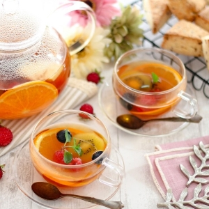
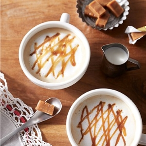
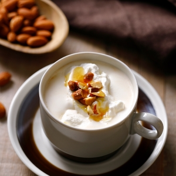
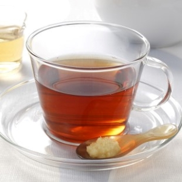
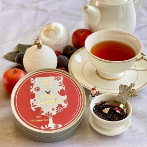

さまざまな茶葉を組み合わせて作る紅茶のことを、ブレンドティーと言います。
ブレンドティーは、ブレンドされた茶葉同士の個性を掛け合わせることで、味わい深い紅茶が楽しめるのが特徴です。
ここでは、特に人気の高いブレンドティーを4種類ピックアップし、それぞれの特徴を紹介します。
イングリッシュブレックファストイングリッシュブレックファストは、1日の始まりの朝食に合うようにと作られた紅茶です。しっかりとした味わいのインドやスリランカなどの茶葉がブレンドされ、芳醇な香りと甘みが特徴です。
イングリッシュブレックファストは、ストレートで飲んでもミルクを入れてもおいしく飲むことができます。
セイロン・オレンジペコセイロン・オレンジペコは、スリランカで収穫された良質な茶葉がブレンドされた紅茶です。
スリランカで収穫された茶葉は「セイロンティー」と呼ばれ、産地によって主に7つの種類がありますが、セイロン・オレンジペコはそのセイロンティーがバランス良くブレンドされているのが特徴です。
セイロン・オレンジペコは、香り・味ともに上質な紅茶として世界中の紅茶ファンから愛されています
クセがなく飲みやすいため、ストレートで飲んだりミルクやフルーツを入れたりなど、どんな飲み方でも合うでしょう。
イギリスには、午後に紅茶とともにお菓子を食べる喫茶習慣があります。そのときのお菓子に合うようにブレンドされた紅茶が、アフタヌーンティーです。
ブレンドされる茶葉はさまざまですが、アフタヌーンティーとして販売される紅茶はどれもティータイムにぴったりの優雅で上品な味わいが特徴です。
ストレートで飲んでもおいしいですが、イギリスで最も好まれているアフタヌーンティーの飲み方は、ミルクを入れたミルクティーです。
ロイヤルブレンドロイヤルブレンドは、1902年イギリス国王のエドワード7世のためにブレンドされたのが始まりです。バランス良くブレンドされており、上品でクセのない味わいを楽しめます。
また、ロイヤルブレンドは、ストレートでもミルクを入れてもおいしく飲めるブレンドティーです。ミルクティーで飲む場合は、抽出時間を少し長めにするとよりおいしく仕上がります。
フレーバーティーとは、茶葉に香り付けした紅茶のことを指します。
花やナッツ、スパイスなど、香りの種類が豊富なほか、茶葉に花びらが入った紅茶などもあり、見た目も華やかになると人気があります。
アールグレイアールグレイティーは、ベルガモットの表皮から抽出した香油（オイル）を中国系茶葉に吹き付けたフレーバーティーです。アイスティーにすると一段と特徴が引き立ちます。
アールグレイは、1830年代のイギリスの宰相、チャールズ・グレイ伯爵の名前に由来します（アールは“伯爵”の意）。
イギリスから中国へ派遣された外交使節団の一員によって持ち帰られ、大の紅茶好きであったグレイ伯爵に献上されました。
伯爵は、この珍しい特殊なフレーバーティーをこよなく愛したことから「アールグレイティー」と呼ばれるようになりました。
≪フレーバーティーの5つの種類≫
    
3.5秒に一回画像が切り替わります。